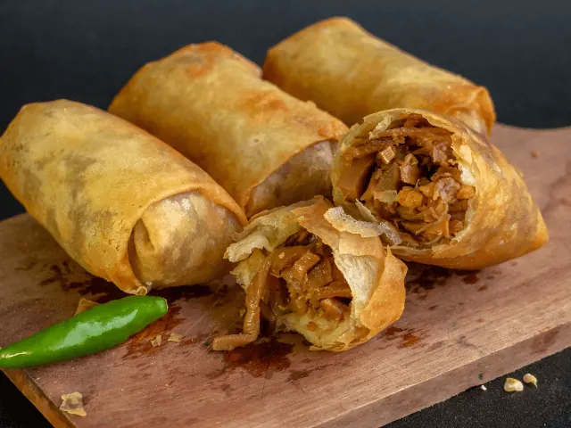

Indonesisch eten in Nijmegen: 4 adressen voor rijsttafel en rendang
Bijgewerkt op 21 november 2026.
Een rijsttafel delen met vrienden, een bord rendang dat uren heeft gestoofd of gewoon een goede nasi rames: Indonesisch eten blijft geliefd in Nijmegen. Wij kozen vier restaurants waar je aan tafel aanschuift, elk met een eigen sfeer. Daaronder de beste adressen als je liever thuis eet.

Zo hebben we gekozen
We lazen in oktober 2026 de websites van de restaurants in onze bedrijvengids met een Indonesische of Indische kaart. We kozen vier zaken waar je aan tafel kunt eten en waar de Indonesische keuken de hoofdrol speelt. Vier, omdat dat de plekken zijn die we echt kunnen aanraden.
Goed om te weten: een rijsttafel bestel je meestal vanaf twee personen. Reserveer dan even vooraf.
1. Bankoh: rijsttafel aan de Waal
Bij Bankoh zie je de Waalbrug en de oude haven vanaf je tafel. De keuken brengt Aziatische en vooral Indonesische klassiekers op een eigen manier. Bestel een rijsttafel om samen te delen, ook in een vegetarische versie. Er staan ook plantaardige en glutenvrije gerechten op de kaart.
Aan de bar probeer je een cocktail met sake, en bij mooi weer zit je buiten tussen de palmen. Voor groepen zijn er groepsmenu's. Bankoh is elke avond open vanaf vijf uur.
Goed voor: een rijsttafel met vrienden en een zonsondergang erbij.
2. Tiffin: klein en huiselijk in Bottendaal
Tiffin aan de Burghardt van den Berghstraat in Bottendaal heeft zo'n dertig plekken. De kaart is bewust klein: nasi rames met paniki of babi ketjap, saté, soto ayam en dumplings, en als toetje spekkoek of cendol. Vegetariërs kiezen gerechten met tempeh en tofu.
De rendang stooft met geduld. In de zomer zit je op het terrasje. Bel voor een tafel of loop binnen. Afhalen bestel je telefonisch. Op maandag en dinsdag is Tiffin dicht.
Goed voor: een rustig etentje met z'n tweeën.
3. Pasundan: rijsttafel, laksa en veel vegan
Aan de Sint Jorisstraat, vlak bij het centrum, eet je bij Pasundan saté, rendang, nasi kuning en pittige soepen als laksa en soto ayam. Ook vegetariërs en veganisten kunnen hier goed terecht.
Met twee of meer personen bestel je een rijsttafel. Reserveer die vooraf. Liever thuis? Je bestelt online om af te halen of te laten bezorgen. Pasundan is open van donderdag tot en met maandag, vanaf vier uur.
Goed voor: een rijsttafel, aan tafel of thuis.
4. Emmy Eethuis: elke dag vers ingekocht
In de Prins Hendrikstraat kookt Emmy met ingrediënten die ze die dag heeft ingekocht. Daarom wisselt de kaart, en er komt geen magnetron aan te pas. Laat je verrassen door groenten die je misschien nog niet kent.
Het is een gemoedelijk eethuis waar je rustig de tijd neemt. Open van woensdag tot en met zaterdag vanaf vijf uur. Reserveren doe je telefonisch of per mail. Afhalen kan ook.
Goed voor: wie houdt van huiselijk en dagvers.
Liever thuis een rijsttafel?
- De Mandarijn in de Tooropstraat in Nijmegen-Oost: Chinees-Indisch om af te halen, van soep tot complete rijsttafel. Voor een feest regelen ze een warm buffet.
- Pasundan: bestel online om af te halen of te laten bezorgen.
- Oude Non aan de Oude Nonnendaalseweg: elke woensdag en donderdag een wisselende afhaalmaaltijd, soms een Indische rijsttafel. Bestel voor twaalf uur.
Een Indonesisch tintje
- Buurtcafé Adriaan in Nijmegen-Oost: een mix van Hollandse, Italiaanse en Indonesische invloeden, met snacks als kippenvleugeltjes in kokossaus.
- Eetbar MikMak aan het Kelfkensbos: wereldkeuken, met een vegan rendang van spitskool.
Meer Aziatisch eten? Lees Aziatische hoogstandjes in Nijmegen en de 3 beste ramenzaken in Nijmegen.
Meer in onze gids restaurants in Nijmegen.
Veelgestelde vragen
Waar eet je een rijsttafel in Nijmegen?
Bij Bankoh aan de Waal (ook vegetarisch) en bij Pasundan in de Sint Jorisstraat. Een rijsttafel afhalen kan bij De Mandarijn in Nijmegen-Oost.
Waar eet je vegetarisch of vegan Indonesisch in Nijmegen?
Pasundan heeft veel vegetarische en vegan gerechten, Bankoh heeft een vegetarische rijsttafel en Tiffin kookt met tempeh en tofu.
Kun je Indonesisch eten laten bezorgen in Nijmegen?
Ja, Pasundan bezorgt. Bij De Mandarijn, Tiffin en Emmy Eethuis kun je afhalen.
Welk Indonesisch restaurant is op maandag open?
Bankoh is elke avond open en Pasundan is op maandag open vanaf vier uur. Tiffin en Emmy Eethuis zijn op maandag dicht.